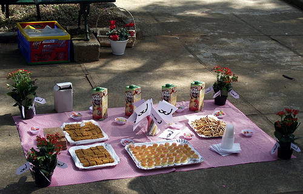

silia moan: Cliquem e vejam o resultado de sp... AE!!!!!!!!!!!! Mutirão =D bjuxxxx
mbraz: muuuitooo boooom !!! Coisa linda de se ver! ;)))
mariel zasso: Que orguio!!! :)
renato fabbri: felicidades!
efeefe: excelente notícia! nossos agradecimentos a todo mundo que colaborou com produções, textos, imagens, vídeos, ideias e tudo mais pro mutirão nesses últimos anos... dalhe #mutgamb!! e vamo que vamo!
hd: q beleza!!!!!!!!!!!! bjs a todos
téia: vamos comemorar a força do mutirão.... :) continuo sentindo o toque do tambor. bjs e saudade
efeefe: mais um motivo pra todo mundo aparecer no encontrinho sabadão, hein?
Ou seja, exatamente 3 meses depois, em 23 de junho [1], estávamos comemorando a vitória, nas palavras da Maira:
Oi todos
:D
Queria agradecer a todo mundo que ajudou na conquista desse prêmio, mesmo.
O Felipe pela oportunidade de trabalhar com o Mutirão, por acreditar e apoiar a reformulação do projeto para ser transformar em núcleo editorial.
Sília, Mariel, Teia, Gera por tudo o que temos compartilhado e sonhado.
A Tati, Hd, Orlando que tem ajudado nas articulacões, com ideias, com provocacões.
E, agradeco mais ainda aqueles olham aqui, como luckers, que duvidaram e que dizem-que-dizem tentando o hype.
Como diria um amigo nosso: Pois é "Transmutamos"
Beijos e abs no sábado, pessoalmente
:****
flavia cremonesi: aêeee!!! parabénsss :) beijos
dalton martins: Parabéns de coração. E como diriam os antigos tatankas: "i don´t believe the hype." ;-) Bjs
yasodara cordova: #chique :)
drica guzzi: Uau! Parabéns! Merecidissimo!!!! ;-))Bj carinhoso
orlandodasilva: meu respeito pra quens ralaram no operacional :)
ricardobrazileiro: parabens todomundo! to muito feliz eh noiz
“E noiz” seguimos felizes pra comemorar o prêmio, o lançamento do Mutsaz outono 2010, os oito anos do projeto metáfora e a oportunidade de se encontrar... longe ou perto... ao vivo e em cores...

foto: @efeefe
[dica: imagine-se aqui, coloque quantas pessoas quiser]